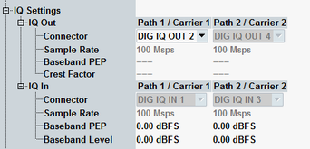

The parameters in this section configure the I/Q output and input paths for scenarios with external fading.
In such scenarios, a connected external fader (e.g. R&S SMW200A) superimposes fading on the baseband downlink signal.
For a multi-carrier scenario with external fading, all parameters described below are available per carrier / path.
For general prerequisites, required options and background information refer to "External Fading".
See also: "Digital IQ"

Selects the output connector. The input connector depends on the output connector and is displayed for information.
The DIG IQ connectors are at the rear panel (if an I/Q board is installed).
Remote command:The used sample rate is displayed for information. The value is fixed.
Configure the connected instrument accordingly (baseband input settings and digital I/Q output settings).
Remote command:Indicates the peak envelope power of the baseband signal as dB value relative to full scale. "Full scale" in this case corresponds to the maximum representable amplitude of the I/Q samples.
Use the displayed output PEP value to configure the baseband input of the connected external fader.
Configure the input PEP so that it matches the baseband output of the connected instrument.
Remote command:Indicates the crest factor of the baseband signal, i.e. the ratio of peak to average baseband power. The average power is calculated for time intervals with active downlink traffic channel timeslots only.
Use the displayed crest factor value to configure the baseband input of the connected instrument.
Remote command:Indicates the nominal RMS level of the baseband signal during a call (connection established).
Configure the baseband level so that it matches the baseband output of the connected instrument.
Remote command: